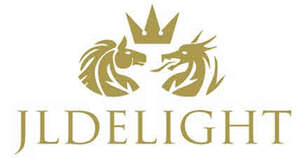
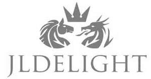

Trade Mark Journal No.2026/007 13 February 2026
UK00004332609 30 January 2026 (16,28)
Mark 1

Mark 2

The color Curry(RAL 1027) is claimed as a feature of the first mark in the series.
International priority date claimed: 23 January 2026
(The Hong Kong Special Administrative Region of the People's Republic of China)
(307169860)
- Class 16
- Bags [envelopes, pouches] of paper or plastics, for packaging; boxes of paper or cardboard; cardboard tubes; cardboard; cards; charts; carrier bags of paper or plastic; shopping bags of paper or plastic; catalogues; flags of paper; greeting cards; labels of paper or cardboard; musical greeting cards; note books; packing [cushioning, stuffing] materials of paper or cardboard; padding materials of paper or cardboard; stuffing of paper or cardboard; paint boxes for use in schools; paper party decorations; paper; papers for painting and calligraphy; pen cases; boxes for pens; placards of paper or cardboard; printed coupons; printed matter; table napkins of paper; tissue paper; wrapping paper; packing paper.
- Class 28
- Bells for Christmas trees; bingo cards; board games; card games; carnival masks; chess games; chessboards; confetti; crackers [party novelties]; dominoes; draughtboards; checkerboards; draughts [games]; checkers [games]; games; jigsaw puzzles; masks [toys]; novelty toys for parties; novelty toys for playing jokes; ornaments for Christmas trees, except lights, candles and confectionery; paper party hats; party poppers [party novelties]; playing cards; trading card games; trading cards for games.
LAU Ha trading as REJOICING GIFT COMPANY
Representative: Bayer & Norton Business Consultant Ltd